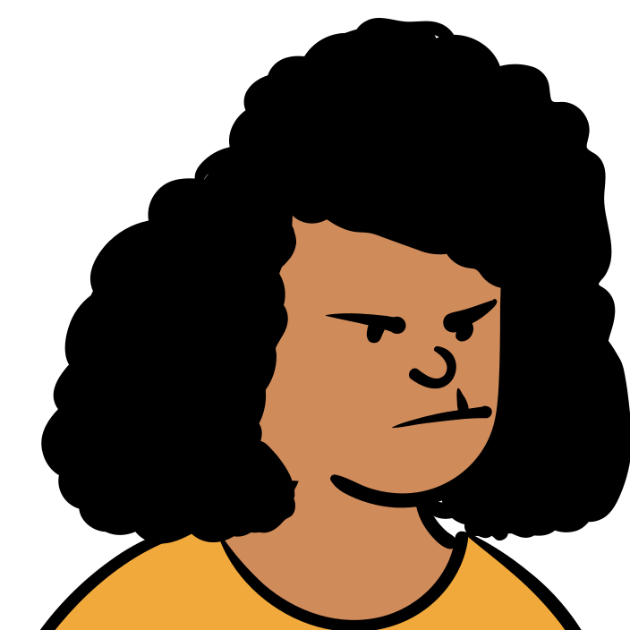

{{ g.title }}
Space, on a 4px base
{{ s.n }}
Radius
{{ r.name }} {{ r.px }}
Shadow
{{ s.name }}
{{ s.use }}
{{ p.name }}
{{ p.who }}
{{ p.gap }}
Button · on paper
Continue
Son's message and his button
S
Son · Your guide
Sofia can't hear me, only you.
Next
The conversation

Sofia · annoyed
Yesterday someone was on the phone right next to me for half an hour.
You
I'm listening. Tell me what happened, from the start.
Call ended
Zone tag, floor tape and the result mark
A Cozy Desk field, and a row of the log
The floor plan